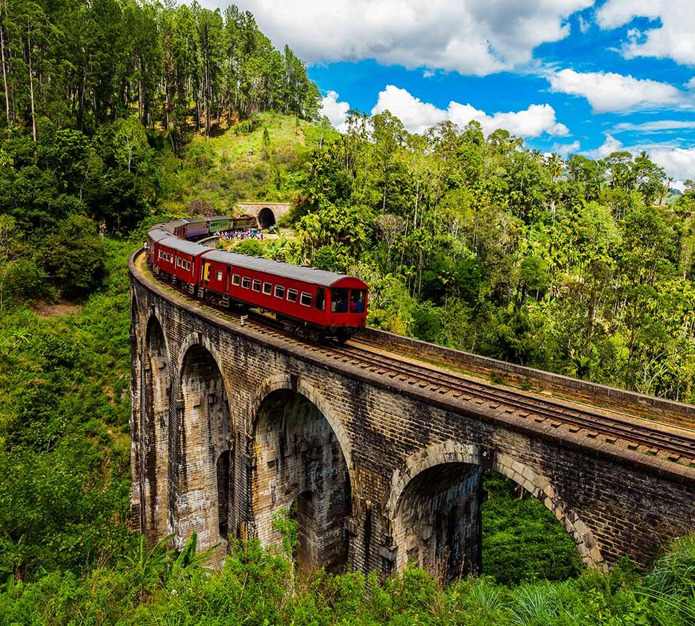

<!DOCTYPE html>
<html lang="en">
<head>
    <meta charset="UTF-8">
    <meta name="viewport" content="width=device-width, initial-scale=1.0">
    <title>Traventure</title>
    <link rel="stylesheet" href="blog.css">
    <link rel="stylesheet" href="../Navbar/navbar.css">
  <link rel="stylesheet" href="../Footer/footer.css">
</head>
    <body>
        <nav id="navbar-placeholder"></nav>
        
    <main>
        <section>
            <h2></h2>
            <div class="blog">
              <div class="content-container">
                <h2 class="blog-title"></h2>
                
                <p class="blog-content"></p>
            </div>
              <!--<h2><i>Nine Arch Bridge</i> </h2>
              <div class="content-container">
                <br><br>
                <p>
                  Commissioned under the British in the year 1921, the Nine Arch Bridge stands proudly, a testament to the engineering and architectural brilliance of the early 20<sup>th</sup> century. Ideally placed between the Ella and Demodara railway station, those choosing to walk along the bridge will be presented with scenes of rolling hills and dense jungle to delight in.
                </p>
                <br>
                <p>
                  The Nine Arch Bridge, also known as the ‘Bridge in the Sky,’ was constructed by connecting two bog mountains when constructing the Badulla – Colombo railway. This bridge is 300 feet in length, 25 feet in width, and 80-100 feet in height. It is one of the best examples of colonial-era railway construction in the country. The Bridge can be reached by traveling 2 km on Gotuwala road, starting from Halpe Textile Centre on Badulla Bandarawela road. The surrounding area has seen a steady increase in tourism due to the bridge’s architectural ingenuity and the profuse greenery in the nearby hillsides.
                </p>
                <br>
                <p>
                  Arguably the best time to venture out would be during when the locomotives come barrelling along and thus it is advisable to check on the train schedule in advance. However, be sure to carry your trusty camera with you so that you might capture every moment that unravels before you.
                </p>
              
                
              </div>
              
                    
                      
                      
                    
                </div>-->
                  
            </div>
            
        </section>
    </main>

    <footer id="footer"></footer>

    <script src="../Navbar/navbar.js"></script>
  <script src="blog.js"></script>
  <script>
    // Function to load the Navbar
    function loadNavbar() {
      fetch('../Navbar/navbar.html')
        .then(response => response.text())
        .then(data => {
          document.getElementById('navbar-placeholder').innerHTML = data;
          // Initialize the navbar functionalities
          document.getElementById('menu-toggle').addEventListener('click', function() {
            const navMenu = document.getElementById('nav-menu');
            navMenu.classList.toggle('active');
          });

          // Set the initial state
          updateNavbarState(false); // Set initial state (false means not logged in)
        });
    }

    // Function to load the Footer
    function loadFooter() {
      fetch('../Footer/footer.html')
        .then(response => response.text())
        .then(data => {
          document.getElementById('footer').innerHTML = data;
        });
    }

    document.addEventListener('DOMContentLoaded', function() {
      loadNavbar();
      loadFooter();
    });

    // Handle login state (optional)
    function handleLogin(event) {
      event.preventDefault();
      // Simulate login action
      updateNavbarState(true); // Set state to logged in
    }

    function handleLogout(event) {
      event.preventDefault();
      // Simulate logout action
      updateNavbarState(false); // Set state to logged out
    }

    function updateNavbarState(isLoggedIn) {
      if (isLoggedIn) {
        document.getElementById('login-link').classList.add('hidden');
        document.getElementById('user-icon').classList.remove('hidden');
      } else {
        document.getElementById('login-link').classList.remove('hidden');
        document.getElementById('user-icon').classList.add('hidden');
      }
    }
  </script>
    </body>
</html>